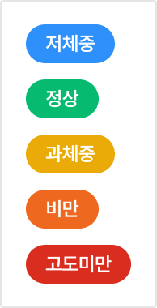
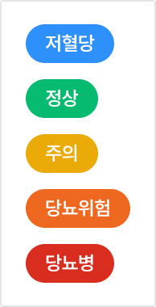
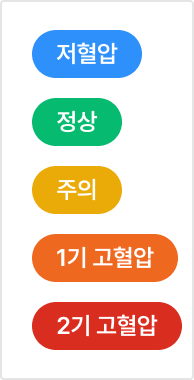
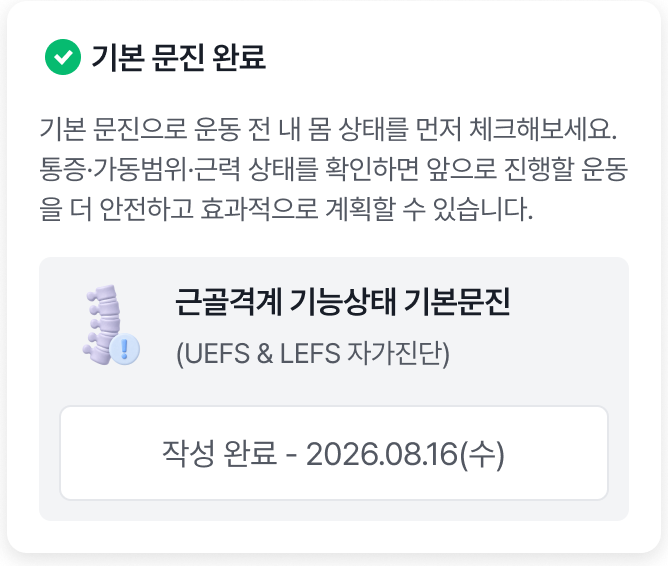

{{ cur.title }}
{{ cur.subtitle }}
디자인에서 배포까지,
하나의 기준으로 잇는 시스템
메타플라이어 서비스 사이트는 9개 제품 모듈이 서로 다른 시기에 만들어지며 화면 규칙이 조금씩 달라져 있었습니다. Figma에서 토큰 시스템을 먼저 세우고, 이 기준을 UI 수정 · 개발 전달 · 퍼블리싱 QA · 버그 개선까지 그대로 이어지게 하는 것을 목표로 했습니다.
Figma 토큰 시스템 구축
컬러·타이포·간격·라운드를 Figma Variables로 정의하고, 의미 단위(Color Tokens / Background·Content)로 묶었습니다. 정리된 토큰과 컴포넌트를 추출해 Claude에 업로드하고, 화면 제작의 기준 데이터로 사용했습니다.
프로토타입 제작 · 팀 리뷰
Figma 디자인을 Claude에 업로드해 실제로 동작하는 프로토타입을 만들었습니다. 정적인 시안 대신 프로토타입을 기준으로 팀원들과 리뷰하며 UI와 UX Flow를 함께 수정하고, 화면 간 흐름과 예외 상태까지 직접 눌러보며 확인했습니다.
AI Dev Ops 태스크 등록
Claude 프로토타입을 기준으로 수정 사항을 메타플라이어 AI Dev Ops에 태스크로 등록했습니다. 등록된 태스크는 AI가 코드에 먼저 반영하고, 개발자가 결과를 확인한 뒤 최종 승인하는 구조로 디자인 → 개발 전달 과정을 단축했습니다.
퍼블리싱 확인 · QA
개선된 화면을 중심으로 퍼블리싱 결과물을 디자인과 대조했습니다. HTML/CSS 단위로 간격·컬러·상태값을 확인하고, 차이가 있는 부분을 QA 항목으로 기록했습니다.
버그 · 수정사항 개선
QA에서 나온 버그와 수정사항을 개발자와 함께 우선순위를 정해 개선했습니다. 수정된 내용은 다시 디자인 시스템에 반영해, 다음 화면에서 같은 문제가 반복되지 않도록 했습니다.
토큰 시스템
무채색 Neutral을 기본으로 두고, 상태를 전달하는 의미 컬러만 별도 팔레트로 분리했습니다. 컬러는 값이 아니라 역할(Background · Content)로 고르도록 토큰화했습니다.
컴포넌트
버튼은 Size 7 · Hierarchy 6 · State 3 축으로 126개 배리언트를 하나의 세트로 묶었습니다. 같은 방식으로 Badge · Input · Table · Navigation까지 상태값을 규격화했습니다.
주요 컴포넌트
정보량이 가장 많은 리스트 화면의 기준입니다. 검색 · 필터 · 주요 액션을 표 위 한 줄에 고정하고, Header · Row · 상태 Badge · 페이지네이션을 조합 단위로 나눠 모듈마다 열 구성만 바꿔 재사용합니다.
대시보드와 홈을 구성하는 카드는 지표 · 인사이트(액션 유도) · 고객 정보 · 사용량 4가지 유형으로 정리했습니다. 모든 카드가 같은 패딩 · 라운드 · 타이틀 규칙을 공유합니다.
흐름을 잠시 멈추는 확인 · 입력 모달은 헤더 · 본문 · 하단 버튼 영역의 3단 구조로 통일했습니다. 위험한 행동은 Red 버튼으로만 구분합니다.
Text Field · Select · Date Picker는 라벨 · 입력 영역 · 도움말 구조를 공유하고, 상태는 테두리와 도움말 색으로만 구분합니다.
시스템 적용 전후
같은 화면을 토큰과 컴포넌트 기준으로 다시 정리했습니다. 기능은 그대로 두고, 화면 규칙만 바꿨을 때 달라지는 부분입니다.
적용한 화면
토큰 → 컴포넌트 → 화면 순서로 쌓은 규칙이 실제 서비스 화면에서 어떻게 쓰였는지 정리했습니다. 화면마다 사용한 컴포넌트를 함께 표기했습니다.
모듈별 핵심 지표를 카드 단위로 통일했습니다. 차트 · 지표 카드 · 기간 필터가 같은 간격과 타이포 규칙을 따르도록 정리해, 모듈이 바뀌어도 읽는 순서가 같습니다.
가장 정보량이 많은 표 화면은 Header · Row · 상태 Badge · 페이지네이션으로 쪼개 규격화했습니다. 검색과 필터는 상단 한 줄에 고정해 어떤 리스트에서도 같은 위치에서 찾을 수 있습니다.
입력이 긴 생성 화면은 단계(Step) 구조로 나누고, Text Field · Combo Box · Radio의 라벨 · 도움말 · 오류 상태를 하나의 규칙으로 맞췄습니다.
모달은 헤더(제목 · 설명 · 닫기) · 본문 · 하단 액션 영역으로 구조를 고정하고, 크기는 S · M · L 3단계 폭으로 규격화했습니다. 본문이 길어지면 헤더를 고정한 채 본문만 스크롤되고, 배경 Dim과 바깥 영역 클릭 · ESC 닫기 동작을 모든 모달에 동일하게 적용했습니다.
9개 모듈을 한 사이드바에 담으면서 카테고리 · 메뉴 · 선택 상태를 3단계 위계로 정리했습니다. 선택 메뉴는 흰색 7% 배경과 좌측 3px 라인으로만 구분합니다.
설정 화면은 2depth 메뉴 → 페이지 헤더 → 탭 → 섹션 카드의 4단 구조를 템플릿으로 고정했습니다. 카드 안 입력 항목은 Label + Text Field · Select를 2열 그리드로 배치하고, 파일 업로드와 저장 버튼까지 같은 높이 · 간격 토큰을 써서 설정 항목이 늘어나도 구조를 그대로 확장할 수 있습니다.
퍼블리싱 QA 기록
개선된 화면을 디자인과 1:1로 대조하며 간격 · 컬러 · 상태값 차이를 기록했습니다. 수정된 항목은 컴포넌트에 다시 반영했습니다.
설계 전후로 달라진 것
디자인 시스템은 화면을 예쁘게 맞추는 도구가 아니라,
배포 직전까지 팀이 같은 기준으로 판단하게 만드는 약속이었습니다.
{{ cur.problemLead }}
{{ cur.problemBody }}{{ cur.problemBodyBold }}
왜 아직 해결되지 않았나
기술이 부족해서가 아니라 데이터가 병원 안에 갇혀 있었기 때문입니다. 리서치 수치 뒤의 구조적 원인을 세 가지로 정리했습니다.
페르소나와 JTBD
보호자 두 유형과 공급자인 병원 원장까지 세 명의 페르소나를 세우고, 각자의 상황·촉발 요인·감정을 JTBD 문장으로 정리했습니다. 이후 AI 롤플레이 인터뷰로 반복 키워드와 감정을 코딩해 Pain Point를 추출했습니다.
Pain Point 우선순위 매트릭스
롤플레이에서 추출한 Pain Point를 보호자와 병원 입장으로 나눠 심각도와 발생 빈도로 점수화했습니다. Critical로 분류된 처방식 수급, 병력 기록 공백, 단순 확인 전화를 MVP 범위로 정했습니다.
시장 선정
일상 속 반복되는 불편 10가지를 브레인스토밍한 뒤, 문제 발생 빈도 · 해결책 불완전성 · 데이터 측정 가능성으로 후보를 3개까지 줄였습니다. 남은 반려동물 의료 접근성 시장을 가중치 기준으로 다시 검증했습니다.
문제 가설
리서치 수치를 바탕으로 해결했을 때 측정할 수 있는 가설 네 개를 세웠습니다. 각 가설은 하나의 화면 흐름과 짝을 이루도록 설계 단계에서 연결해 두었습니다.
대안 비교와 차별점
경쟁 앱보다 강한 대체재는 '전화'였습니다. 전화가 이기는 이유는 빠름이 아니라 확정이기 때문에, 비교 기준을 실시간성과 병원 측 부담에 두었습니다.
시장 규모 추정
전체 반려 가구에서 수도권 고관여 보호자의 의료 지출로 좁히고, 초기 제휴 병원 100~150곳 기준의 점유율과 앱 결제 전환율로 첫 목표를 잡았습니다.
{{ s.caption }}
전화하기 전에 확인하던 것을
앱 안으로
보호자가 병원에 전화하는 이유는 대부분 세 가지였습니다. 지금 진료가 되는지, 예약이 되는지, 처방식이 있는지. 이 질문을 홈 · 병원찾기 · 메디컬 로그 · 케어 플러스 네 흐름에 나눠 답하고, 모든 흐름을 반려동물 한 마리 기준으로 묶었습니다.
앱을 켜자마자 "우리 아이의 다음 할 일"이 보이게
홈을 기능 메뉴판이 아니라 반려동물 한 마리의 현재 상태판으로 설계했습니다. 누구의 정보인지(우리 아이 카드) → 지금 챙길 것(접종 알림) → 바로 갈 곳(자주 가는 병원) 순서로 쌓아, 스크롤 한 번 안에 다음 행동까지 닿게 했습니다.
우리 아이 프로필 카드(이름 · 생일 · 품종 · 동물등록번호 · QR), 예방접종 알림 배너, 자주 가는 병원 카드, 추천 가이드 캐러셀, 5탭 하단 내비게이션
신분증처럼 쓰는 프로필 카드
동물등록번호와 QR을 카드 하단에 분리해, 병원 접수 때 앱을 켜고 그대로 보여주면 되는 화면으로 만들었습니다.
강조색은 알림 하나에만
접종 시기 배너만 채도 높은 핑크 면으로 두어, 홈에서 "지금 챙길 것"이 유일하게 튀어 보이게 했습니다. 배너를 누르면 접종 안내로 바로 이어집니다.
병원 카드 안에서 끝나는 예약
영업시간 · 연락처 · 공지 · 이벤트를 아이콘 한 줄씩 정리하고, 카드 하단에 예약하기 Primary 버튼을 붙여 병원 상세를 거치지 않아도 되게 했습니다.
찾기 → 확인 → 예약을
세 화면으로 줄이기
전화로 하던 "지금 열었는지, 언제 되는지"를 화면이 대신 답하게 했습니다. 지도와 목록을 한 버튼으로 전환하고, 상세에서는 영업 상태와 거리부터 보여준 뒤, 예약은 날짜 → 시간 두 번의 선택으로 끝나게 설계했습니다.
카카오맵 기반 병원 지도 · 목록보기 토글, 병원 상세(영업 중 · 거리, 진료 시간, 공지사항, 제공 서비스, 오시는 길), 예약 캘린더 · 시간 칩 · 하단 고정 예약 버튼
상태 먼저, 정보는 나중
상세 헤더에 "영업 중 · 1.2km"를 병원명 바로 아래 두고, 진료 시간 · 공지 · 시설은 그 아래 섹션으로 내려 판단 순서를 고정했습니다.
예약 대상 고정
예약 화면 맨 위에 "예약 중인 반려동물" 카드를 고정해, 다견 가정에서도 누구의 예약인지 헷갈리지 않게 했습니다.
규정은 버튼 바로 위에
변경 · 취소 가능 시간 안내를 예약하기 버튼 직전에 배치해, 확정 직전에 한 번만 읽히게 했습니다.
병원이 바뀌어도 기록은 한 줄로 쌓이게
여러 병원에 흩어진 진료 이력을 하나의 목록으로 모았습니다. 목록에서는 날짜 · 병원 · 한 줄 요약만 보여 훑기 쉽게 하고, 상세에서는 진료 기록지와 같은 순서로 정보를 펼쳐 병원을 옮겨도 그대로 보여줄 수 있게 했습니다.
진료기록 / 수술이력 탭, 날짜별 기록 리스트(병원명 · 요약 · 상세보기), 진료 상세(병명 · 검사항목 · 검사결과 · 진료 소견 · 처방 내역 · 병원 정보), 우리 아이 페이지의 접종 이력 표 · 몸무게 그래프 · 알러지 정보
목록은 세 줄 규격
날짜 → 병원명 → 요약 세 줄로 행 높이를 고정해, 병원이 달라도 같은 리듬으로 읽힙니다.
상세는 진료 기록지 순서
병명 → 검사 → 결과 → 소견 → 처방 순으로 배치해, 다른 병원 수의사에게 화면을 그대로 보여줘도 읽히는 구조로 만들었습니다.
다음 접종일을 표 안에
접종 이력 표에 접종일과 다음 접종을 나란히 두어, 기록이 곧 다음 일정 알림의 근거가 되게 했습니다.
처방식을 헛걸음 없이 받게
처방식은 병원에서만 살 수 있어 재고를 모르고 가면 헛걸음이 됩니다. 상품 목록에서 픽업 가능 여부와 재입고 예정을 먼저 보여주고, 구매 대신 "병원 · 날짜 · 시간"을 고르는 픽업 예약으로 흐름을 닫았습니다.
카테고리 탭(베스트 · 처방식 · 영양제 · 구강관리 · 간식), 인기도순 정렬 · 픽업 가능 필터, 상품 카드(가격 · 재입고 예정 라벨), 픽업 예약(병원 · 날짜 · 30분 단위 시간), 결제 상세(상품 금액 · 멤버십 할인 · 최종 금액), 예약 확정 버튼
픽업 가능을 필터로
"픽업 가능"을 정렬 옆 토글로 두어, 지금 받을 수 있는 상품만 남기는 게 한 번의 탭으로 끝납니다.
품절 대신 재입고 예정
재고 없는 상품을 지우지 않고 "재입고 예정" 라벨을 붙여, 대체 상품을 찾거나 기다릴지 보호자가 고를 수 있게 했습니다.
금액은 확정 직전에 한 번
할인 반영 후 최종 결제 예정 금액을 예약 확정 버튼 바로 위에 두어, 결제 전 마지막 확인이 한 블록에서 끝나게 했습니다.
네 흐름이 공유하는 규칙
CTA는 화면당 하나
예약하기 · 진료 예약하기 · 예약 확정하기처럼 화면마다 Primary는 하단 버튼 하나만 둡니다.
색은 역할로 나눈다
블루는 행동(버튼 · 활성 탭), 핑크는 시점 알림에만 씁니다. 같은 색이 두 가지 의미를 갖지 않습니다.
반려동물이 항상 문맥
예약 · 접종 · 기록 화면 상단에 대상 반려동물을 고정해, 누구의 정보인지 다시 묻지 않게 했습니다.
UX에서 고려한 것
화면 규칙 아래에는 보호자의 상황에 대한 가정이 있습니다. 페르소나 인터뷰에서 반복된 감정(죄책감 · 초조함 · 막막함)을 줄이는 쪽으로 판단 기준을 정했습니다.
아홉 개 서비스를
하나의 흐름으로 보여주기
서비스를 평면으로 나열하면 방문자는 '무엇이 들어 있는지'만 읽고 나갑니다. 정보 구조를 수집 → 분석 → 실행 → 관리라는 고객 여정 순서로 바꿔 아홉 개가 서로 이어진 하나의 경험으로 읽히게 했고, 역할별 진입 경로를 따로 두어 마케터·세일즈·경영자가 각자 필요한 구간부터 읽게 했습니다.
- 모듈 9개를 동등한 카드로 나열 — 우선순위 없음
- 타겟층이 불분명 — 마케터 · 세일즈 · 경영자가 한 페이지를 공유해 누구의 문제도 짚지 못함
- CTA가 섹션마다 다른 폼으로 흩어짐
- 수집 → 분석 → 실행 → 관리 4단계에 모듈을 배치
- 역할별 앵커로 필요한 구간만 골라 읽게 분기
- 전환은 '무료 체험' · '도입 문의' 두 모달로 통합
페이지마다 방문자의
목적에 맞춘 정보 순서
서브 페이지는 방문 목적이 서로 다릅니다. 서비스 페이지는 "나에게 필요한가", 요금은 "어떤 플랜이 맞는가", 블로그는 "더 알아볼 가치가 있는가", 고객센터는 "지금 문제를 해결할 수 있는가"에 답하도록 페이지별 정보 순서를 정했습니다.
타겟마다 다른 질문에, 다른 깊이로 답하기
한 페이지에 세 타겟이 들어오므로, 카피를 늘리는 대신 읽는 순서를 분기시켰습니다. 역할별 앵커로 진입 구간을 나누고, 같은 서비스도 역할에 따라 보이는 정보의 깊이를 다르게 설계했습니다.
"실제로 어떻게 실행되나"
Solution 블록에서 캠페인·자동화·메시지 서비스를 화면 단위로 보여주고, 각 블록에 체크 3개로 실행 조건을 명시했습니다.
"우리 환경에 붙는가"
도입 상담에서 반복되던 연동·보안·데이터 이관 질문을 Use cases 뒤에 배치해, 검토 단계의 흐름 그대로 읽히게 했습니다.
"무엇이 좋아지는가"
히어로의 가치 문장과 플랜 카드 규격만으로 판단이 끝나도록, 중간 기능 설명을 건너뛰는 앵커를 상단 GNB에 뒀습니다.
연결되어 있다는 감각을
화면으로 만들기
아홉 개가 이어져 있다는 말은 글보다 화면이 증명해야 합니다. 브랜드 사이트의 역할에 맞춰 정보 밀도를 낮추고, 스크롤 자체가 여정을 따라 이동하는 경험이 되도록 레이아웃과 인터랙션을 설계했습니다.
화면별 설계 결정
화면마다 방문자가 내려야 하는 판단은 하나입니다. 각 화면이 그 판단에 필요한 정보만 남기도록 레이아웃·위계·인터랙션을 결정했고, 아래에 그 근거를 화면 단위로 정리했습니다.
정보 구조와 핵심 가치 제안을 첫 화면에 압축
"마케팅·영업·상담을 연결하는 AI CXM", "고객 경험을 하나로, 실행은 AI로"를 최상단에 두어 방문자가 3초 안에 B2B SaaS라는 서비스 정체성을 판단하게 했습니다. 상단 GNB는 소개 · 서비스 · 요금 안내 · 블로그 · 고객센터로 분류하고, 드롭다운에서 마케터 / 세일즈 / 경영자 페르소나별 경로를 바로 노출합니다. 전환 버튼은 GNB와 히어로 두 곳에만 두고 같은 Primary Accent로 통일했습니다.
말풍선으로 시작해 화면으로 증명하는 레이아웃
첫 화면은 기능명 대신 직무별 고민을 말풍선 UI로 보여줘 방문자가 자기 이야기로 읽게 했습니다. 이어지는 구간에서는 설명보다 실제 제품 화면을 먼저 크게 두고, 특징은 같은 크기의 카드 3개로, 고객 사례는 인용 카드로 마무리해 시선이 위에서 아래로 끊기지 않게 했습니다.
엑셀로 취합하고 있어요
누가 챙기는지 모르겠어요
성과가 나는지 안 보여요
추천 플랜 하나만 강조하는 요금 카드
3개 플랜 카드를 같은 크기로 두되, 추천 플랜만 Primary 채움 버튼과 배지를 줘 선택 기준을 시각적으로 제시했습니다. 세부 정보는 처음부터 펼치지 않고 필요한 사람만 열어보도록 인터랙션 단계를 나눴습니다.
목록은 빠르게 훑고, 상세는 서비스로 이어지게
목록 화면은 대표 글 하나를 크게, 나머지는 같은 규격의 카드로 정렬해 훑어보는 속도를 높였습니다. 상세 화면은 본문 폭을 좁혀 읽기에 집중하게 하고, 본문이 끝나는 지점에 관련 서비스 카드를 배치했습니다.
문의 버튼보다 검색창이 먼저 보이는 고객센터
첫 화면 중앙에 검색창을 가장 크게 두고, 그 아래 FAQ 카테고리를 아이콘 카드로 배치했습니다. 1:1 문의 버튼은 화면 하단과 FAQ 상세 끝에만 둬, 스스로 해결을 먼저 시도하는 흐름을 화면 위계로 만들었습니다.
페이지가 늘어나도 흔들리지 않게
12컬럼 그리드
1440 기준 12컬럼 · 거터 24 · 좌우 여백 40. 모든 섹션이 같은 컬럼 경계에 정렬됩니다.
1440 / 1024 / 768 / 375타이포 스케일
디스플레이 · H1~H4 · 본문 2단 · 캡션까지 8단으로 제한하고, 섹션 제목은 항상 같은 단계를 씁니다.
8 steps웹 컴포넌트
GNB · 히어로 · 솔루션 블록 · 모듈 카드 · 사례 카드 · 요금 표 · 폼 모달 · 푸터를 재사용 단위로 정리하고, 9개 서비스 페이지는 하나의 공통 템플릿으로 확장되게 했습니다.
8 components개발 핸드오프
블록 단위로 반응형 규칙(컬럼 수 · 정렬 · 이미지 비율)을 명시해, 퍼블리싱 중 판단이 필요한 지점을 줄였습니다.
스테이지 서버 배포{{ p.title }}
{{ p.body }}
Color
브랜드 그린을 500으로 두고 25–950까지 12단계를 만들었습니다. 각 칩에는 흰색·검정 중 대비가 높은 쪽의 명암비와 WCAG 등급(AA 4.5:1 / AAA 7:1)을 함께 적어, 텍스트를 올릴 수 있는 단계인지 바로 판단하게 했습니다.
{{ b.hex }}
{{ w.hex }}
Typography
한글·영문·숫자 모두 Pretendard를 사용합니다. Contents Title부터 Caption까지 17단계를 이름으로 정의하고, 각 단계의 굵기·크기/행간·자간을 고정해 화면마다 크기를 새로 정하지 않도록 했습니다.
한글, 영문, 숫자 모두 프리텐다드(Pretendard) 폰트를 사용합니다.
{{ t.name }}
{{ t.weight }} {{ t.size }} {{ t.ls }}Spacing & Grid
일관된 레이아웃 리듬을 위해 4컬럼 그리드를 기본으로 씁니다. 콘텐츠 가독성을 위해 양쪽 마진은 넓게, 요소 간 간격은 촘촘하게 두었고, 표준 모바일 해상도인 375px 단말기를 기준으로 스펙을 정의했습니다.
Grid Specification — 375px 기준
소수점 픽셀 렌더링으로 생기는 화면 흐림을 막기 위해, 실무 디자인과 개발 구현 시 환경에 따라 70px 또는 71px로 정수 반올림해 적용해도 무방합니다.
고정 컬럼 값보다 양 끝 margin 24px와 gutter 15px의 고정 규칙을 우선으로 하고, 컬럼 폭은 디바이스 해상도에 맞춰 늘어나거나 줄어드는 가변(Fluid) 구조를 따릅니다.
Layout Rules
Spacing Scale — 4px 배수
Iconography
아이콘은 Phosphor Icons를 사용합니다. 24px 캔버스의 Regular 웨이트를 기본으로 두고, 선택 상태에만 Fill을 씁니다. 아이콘 단독으로 기능을 구분하지 않고 항상 라벨과 함께 배치하는 것을 규칙으로 했습니다.
Weight — 선택 상태만 Fill
Size — 24px 기본
Icon Set — Phosphor Icons (phosphoricons.com)
// Foundation {{ f.n }}
{{ f.title }}
{{ f.body }}
Button
높이 52 / 48 / 32 세 크기로 정리하고, 각 크기 안에서 Fill·Line·Dark·Gray·Color 변형과 Default·Disabled 상태를 정의했습니다. 화면당 Large Fill 버튼은 하나만 쓰는 것을 규칙으로 했습니다.
{{ g.title }}
{{ g.desc }}
Input
한 줄 입력은 Text Field, 여러 줄 입력은 Text Area로 나누고 패딩·보더 규칙을 두 컴포넌트에서 동일하게 맞췄습니다. 상태는 Default·Typing·Complete·Error 네 가지로 고정하고, 인증 타이머 버튼과 국가 코드처럼 필드 안에 들어가는 요소도 같은 규격에서 처리했습니다.
Text Field
필드 높이 48px, 도움말 포함 76px. 너비는 100%(양쪽 24px 여백 제외), 텍스트 상단 12 / 하단 12, 도움말 간격 8로 고정했습니다.
Border 1px Gray 200 #ebefff
Helper Body5 14(20) Regular / Gray 400 #a0a6c4
Border 1px Gray Neutral 900 #202020
Clear Icon 24×24
Text Area
패딩 16 사방, 보더 1px Gray 200 #ebefff, 라운드 8px. 너비는 100%(양쪽 24px 여백 제외)이고 높이는 내용에 따라 가변입니다.
Border 1px Gray 200 #ebefff · Radius 8px · Padding 16
Border 1px Gray Neutral 900 #202020
Exercise Card
운동 영상, 매거진, 팟캐스트, 숏폼이 모두 하나의 리스트 카드(list_main)를 공유합니다. 썸네일 124px 고정 + 텍스트 영역 100% 구조를 기준으로, 부위 태그·좌우(R/L) 뱃지·도구·난이도 같은 가변 정보를 규칙으로 정리했습니다.
Structure
태블릿 미만 해상도에서 썸네일은 가로·세로 124px로 고정하고, 오른쪽 텍스트 영역이 남은 폭을 100% 차지합니다. 도구 텍스트가 길어지면 한 줄에서 말줄임 처리합니다.
좌우 구분 뱃지
가변 텍스트 처리
도구는 한 줄 고정, 넘치면 말줄임. 필수가 아닌 도구는 같은 줄 끝에 Success 500 톤으로 보조 표기합니다.
Variants & Usage
운동 · 매거진 · 팟캐스트 · 비디오 · 숏폼이 같은 카드 골격을 쓰고, 콘텐츠 종류에 따라 상단 라벨과 설명 줄만 달라집니다.
Metric & Navigation
걸음·BMI·혈당·혈압처럼 성격이 다른 지표를 하나의 카드 규격으로 묶었습니다. 상태 뱃지 색으로 정상·주의를 구분하고, 숫자 위계와 정상 범위 안내 위치를 고정해 지표가 늘어도 읽는 방법이 같도록 했습니다.
Metric Card
제목 + 갱신 시각 · 상태 뱃지 · 대표 수치 · 보조 수치 · 정상 범위 · 기록 추가 순서를 모든 지표에서 동일하게 유지합니다.
숫자 위계
대표 수치 30 Bold, 단위 13 Regular. 보조 수치는 12로 낮춰 한 카드에 크기를 세 단계만 씁니다.
상태 색
정상은 Success 500, 주의·위험은 Warning 500, 활동 유형처럼 판정이 아닌 값은 Gray로 둡니다.
차트
카드 안 차트는 축·수치를 지우고 추세만 남기고, 정확한 값은 상세 화면에서만 보여줍니다.
Chart
지표마다 차트 종류를 고정했습니다. 카드 안에서는 축과 값을 지우고 추세만, 상세 화면에서는 정상 범위 기준선을 함께 보여줍니다.
Comparison Block
"나"와 비교군을 함께 보여줄 때는 항목 라벨 · 조건 · 값이 한 줄에 오고, 막대는 값과 같은 색 토큰을 씁니다. 내 값은 항상 마지막 줄에 둡니다.
Navigation
헤더 · 탭 · 섹션 헤더 세 단계로만 위치를 알려줍니다. 고정 탭은 두 개까지만 두고, 항목이 많으면 스크롤 칩 탭으로 전환합니다.
{{ c.title }}
{{ c.body }}
{{ c.states }}// Screen 0{{ s.n }}
{{ s.title }}
{{ s.caption }}
My · Program
마이페이지는 성격이 다른 정보(프로필 · 건강 지표 · 프로그램 · 건강정보 · 문진)를 한 화면에 쌓습니다.
블록마다 새 레이아웃을 만들지 않고 Section Header + List Row 조합으로만 늘리고,
프로그램은 Program Card 한 종류와 Detail Sheet 한 종류로 병원 재활·기본 운동 모두를 처리합니다.
마이페이지 · 블록 구성
프로필 · 내 병원 · 건강 밸런스 · 진행 중인 프로그램 · 내 건강 정보 · 내 문진 정보를 같은 카드 규격(라운드 16, 좌우 여백 20)으로 쌓았습니다. 각 블록의 제목 우측 화살표는 동일한 Section Header 컴포넌트입니다.
Program Card · Default / Selected
카드는 부위 태그 · 기간 · 프로그램명 · 제공처 네 줄 구조로 고정했습니다. 병원 재활 프로그램과 MELi 기본 프로그램이 같은 카드를 쓰고,
태그 라벨(무릎 / 기본)만 달라집니다.
Selected는 배경을 바꾸지 않고 Green 500 1.5px 테두리와 태그 배경만 Green 50으로 바꿔, 목록 전체의 밝기를 유지합니다.
Detail Sheet · 3 상태
상세는 모두 같은 Bottom Sheet입니다. 진행 기간 · 시작일 · 종료일 · 집중 부위 · 진행상태 · 제공처
여섯 개 Spec Row 순서와 라벨 위치를 고정하고, 상태에 따라 진행상태 값의 색과 Primary Button의 활성 여부만 바꿉니다.
진행 전
시작일 아래에 D-44일 보조 문구를 붙이고, 운동 바로가기는 Disabled(Gray 100 / Gray 400)로 둡니다.
진행 중
진행상태만 Green 500으로 바뀌고 보조 문구는 경과일로 대체됩니다. 유일하게 Primary Button이 Enabled인 상태입니다.
일시정지
기간이 없는 기본 프로그램은 "제한 없는"을 그대로 값으로 씁니다. 빈 값을 만들지 않기 위한 규칙입니다.
Health Record Detail
걸음 · BMI · 혈당 · 혈압은 데이터 성격이 모두 다르지만 화면 골격은 하나입니다.
Period Tab → Numeric 헤드라인 + Status Badge → Chart → Summary Row → Guide Bar 순서를 고정하고,
지표별로 차트 타입(Bar / Line / Dual)과 기준선만 바꿔 끼웁니다.
걸음 · Bar Chart
시간대별 누적은 라운드 캡 Bar로 표시하고,
평균선을 초록 점선으로 겹칩니다.
선택 지점만 Tooltip을 띄워 값 확인을 한 번의 탭으로 끝냅니다.
BMI · Dual Axis
신장(cm)과 체중(kg)은 단위가 달라 좌·우 축을 나누고 Legend를 차트 아래에 고정했습니다. 계산값 BMI는 Numeric 헤드라인,
판정은 Status Badge가 담당합니다.
혈당 · Line + Range
공복·식후 두 기준선을 초록/파랑 점선으로 두고, 월별 값은 Line + Dot으로 잇습니다. 범위 밖 값은 색을 바꾸지 않고 Badge와 하단 Guide Bar로만 알립니다.
혈압 · Line + Bar
수축기는 Line, 이완기는 연한 Bar로 겹쳐 한 차트에서 두 값을 읽게 했습니다. 혈당 화면과 축 · 눈금 · 여백 규격이 완전히 동일합니다.
Status Badge · 5단계
지표마다 라벨은 다르지만 단계 수와 색 토큰은 동일합니다. Blue(낮음) · Green(정상) · Yellow(주의) · Orange(위험) · Red(질환)로 다섯 단계를 고정해, 처음 보는 지표에서도 색만으로 위치를 짐작할 수 있게 했습니다.



Exercise Player
운동 상세 · 영상 화면은 하나의 플레이어 컴포넌트가 상태만 바꿔 동작합니다.
상단 Control Chip(닫기 · 남은 시간 · 배속 · 음량)과 하단 Player Bar는 위치를 고정하고,
화면 중앙만 Ready Sheet → Countdown Ring → Playing으로 교체했습니다.
Ready Sheet
Bottom Sheet(라운드 24, 상단만 곡률)에 동작명 · Numeric 타이머 · 버튼 2개 슬롯을 고정했습니다. Secondary(+10초)와 Primary(바로 시작)를 1:1 비율로 배치해 시작 전 판단만 남깁니다.
Player Bar · Default
이전 · 재생/일시정지 · 다음 3버튼을 라운드 999 바 하나에 담고, 위에 6칸 Step Indicator를 둡니다. 화면을 덮지 않도록 컨트롤은 이 바에만 존재합니다.
Player Bar · Playing
진행률은 별도 컴포넌트를 더하지 않고 Player Bar 배경을 Green 50으로 채우는 방식으로 표현합니다. 남은 시간 Chip과 Step Indicator가 같은 진행을 두 번 알려줍니다.
Countdown Ring
시작 직전 카운트다운은 Progress Ring 하나로 처리합니다. 지름 200 · 두께 16 고정, Track은 White 60%, Indicator는 Green 500이며 남은 초에 따라 각도만 줄어듭니다. 숫자는 Numeric 96 Bold, 링과 같은 Green 500을 씁니다.
Home
홈 화면은 새로 만든 화면이 아니라, 디자인 시스템에 정리한
Chip · Banner · Metric Card · Exercise Card · Guide Card 다섯 컴포넌트를 조합해 만든 결과입니다.
각 요소가 어떤 컴포넌트의 어떤 상태로 쓰였는지 아래에 표시했습니다.
주간 목표 동그라미
Metric Card · 26px 원형 하나를 6개 상태 토큰으로 재사용합니다.
Fill / Half / Outline / Dashed 조합으로 달성·진행·예정을 구분합니다.
오늘의 맞춤 운동
Chip · 32px 높이, 라운드 999, 부위 필터 공용 컴포넌트.
Selected는 Gray 900 배경, Default는 Gray 50 배경으로 상태를 구분합니다.
콘텐츠 배너
Banner · 2.5:1 비율, 라운드 12, 인디케이터 규격을 고정값으로 두어
배너 수가 늘어나도 상단 레이아웃 높이가 변하지 않습니다.
추천 운동 리스트
Exercise Card · 운동 · 매거진 · 숏폼이 16:9 썸네일과 하단 메타 영역을
공유하는 하나의 카드 규격입니다. 진행률 바와 태그 위치도 동일합니다.
건강 안내 카드
Guide Card · 문진 · 건강정보 입력 · 혈당 기록이 공유하는 안내 카드입니다.
아이콘 + 제목 + 본문 + 액션 슬롯 구조를 고정하고,
미완료 / 완료 두 상태만 정의했습니다. 완료 상태에서는 액션 버튼이
작성일 라벨로 대체되고 아이콘이 Success 토큰으로 바뀝니다.

설계 전후로 달라진 것
{{ cur.outcomeLead }}
{{ cur.learning }}
만들고 배포하며
기획부터 개발, 배포까지 혼자 진행한 프로젝트입니다. 단계마다 무엇이 바뀌었는지 순서대로 돌아봤습니다.
이 프로젝트에서 붙잡고 싶었던 건 화면의 완성도가 아니라 보호자가 실제로 겪는 불편이었습니다. 병원이 지금 열었는지 몰라 전화를 걸고, 병원을 옮길 때마다 진료 기록을 처음부터 다시 설명하고, 처방식 재고를 몰라 헛걸음하는 순간들. 화면 하나하나를 그 불편을 하나씩 덜어내는 장치로 설계하려 했습니다.
디자이너로서 개발까지 직접 맡으면서 우여곡절도 많았습니다. 설계에서는 당연했던 흐름이 구현 단계에서 막히기도 했고, 예외 상황을 하나씩 조건으로 풀어내느라 같은 화면을 몇 번씩 다시 만들었습니다. 그렇게 끝까지 붙잡고 실제로 동작하는 서비스를 배포했을 때, 설계한 의도가 사용자의 손에 그대로 닿는다는 성취감을 처음으로 온전히 느꼈습니다.
다음 단계에서는 설계 단계에서 세운 목표 수치(예약 30초, 노쇼 −15%)를 실제 사용 데이터로 검증하고, 병원 측 화면까지 확장해 보호자와 병원 양쪽의 부담을 함께 줄이는 구조를 만들고 싶습니다. 커넥트펫은 제게 디자인이 화면에서 끝나는 일이 아니라, 사용자의 불편이 실제로 줄어드는 순간까지 책임지는 일이라는 걸 알려준 프로젝트입니다.